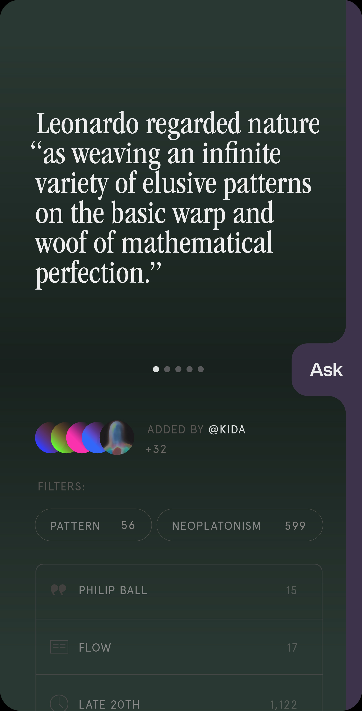
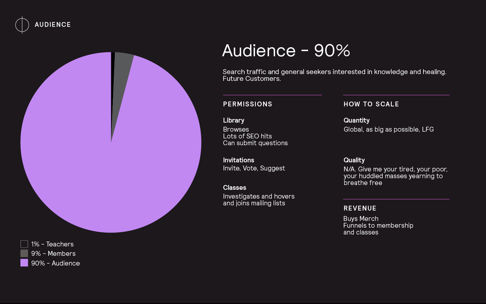
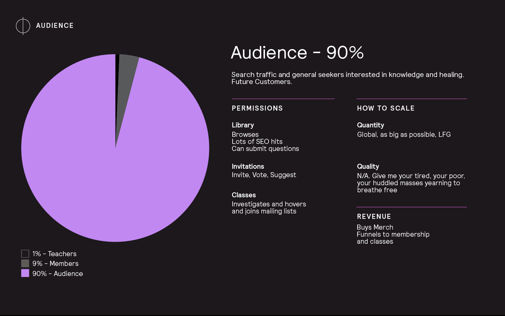

Immortal Library
#, 2021-ongoingTranslating wisdom to the internet means both finding curators with great taste, and providing resources for the translation of those texts into embodied experience, through lessons and practice. A great library should be both a center of learning and a lighthouse for healing. I've spent a career learning how to build high quality communities which can extract data from vast oceans of content, a perennial wisdom library for the internet is both achievable and maintainable, it's just going to be a slow and patient build.
 view tweet of an early build
view tweet of an early build



 
